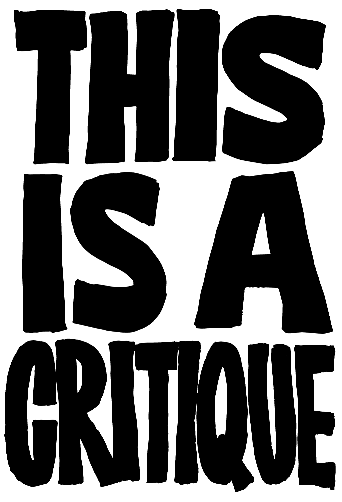
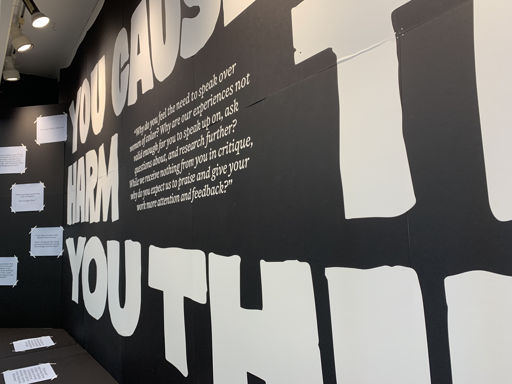
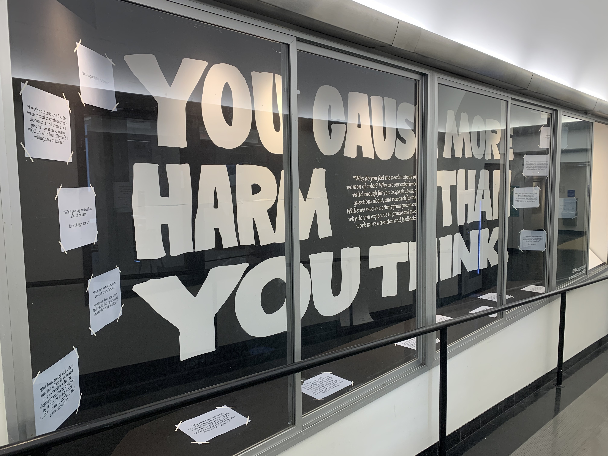
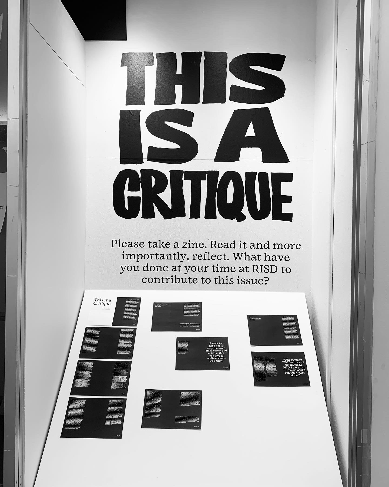
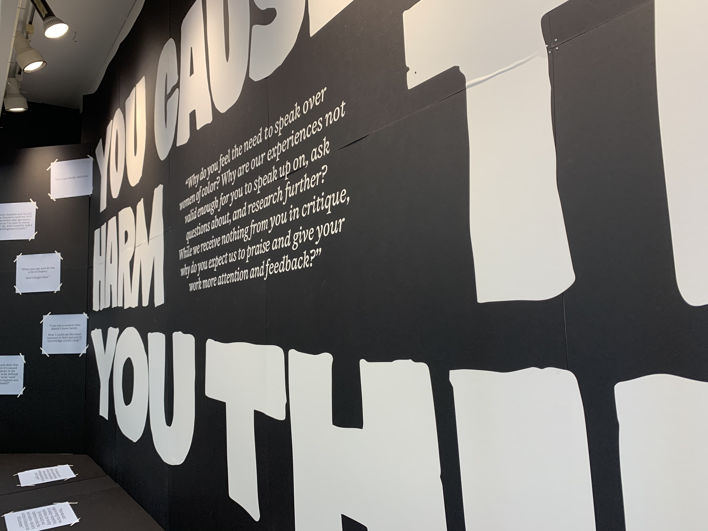
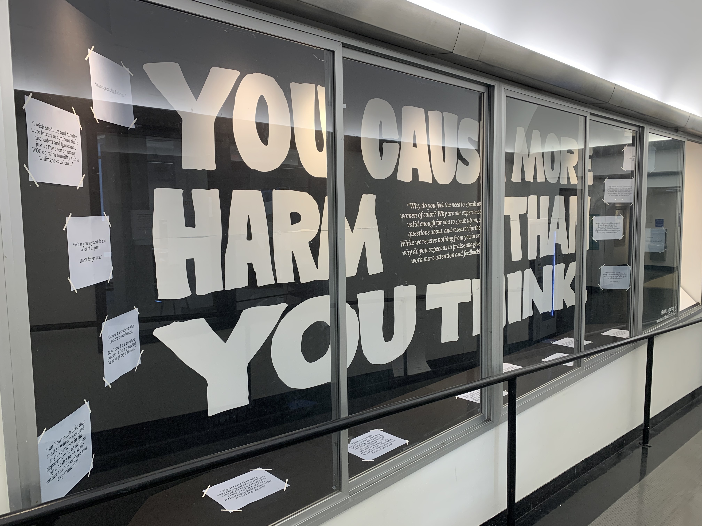
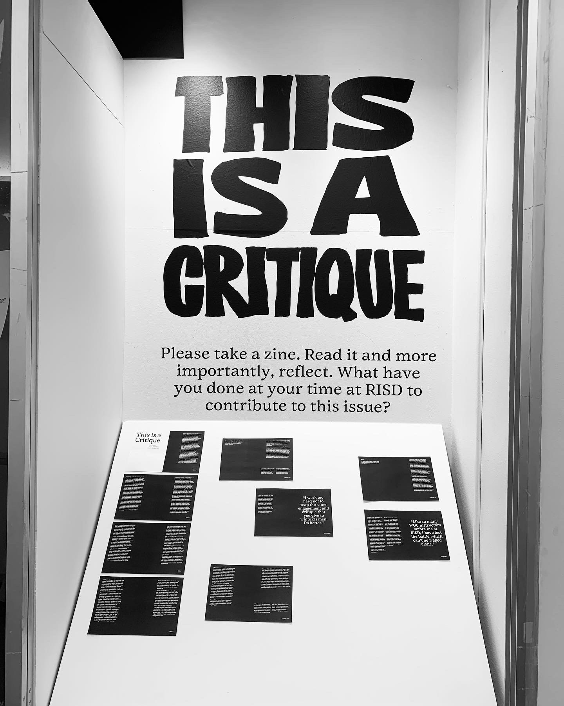

This Is a Critique is a move to confront the eurocentric, male-
centered critique culture and erasure of women of color (WOC) in the Graphic Design department at RISD. It is located in the main hallway entrance of the Design Center from May 10–May 23 2021.
The installation acts as a space for the voices of WOC to freely speak in an institution where we have traditionally been erased or silenced. It acts
to highlight and reveal the structures at play to those who
are and have been complicit.
Included in both the installation and this accompanying zine are the stories and experiences of 14 anonymous WOC in RISD GD.
I keep thinking about what it means to be a WOC in this institution
instilled with patriarchal and
Western (Northern European)
values, and my thoughts keep going back to the expectation of work: work above and beyond what is asked of my male counterparts to even just be known by my name; work above and beyond my non-
BIPOC peers to frame and reframe and recontextualize for the system I have been dropped into; work that is added to my load when my peers
refuse to contribute in a way that feeds back into the community
(unless it serves themselves).
I think the first four weeks of the last semester of my BFA education have been fruitful. I’ve gotten a lot of work done. I am so grateful to have been given the opportunity to do it because I enjoy being able to help others. Through it all, I feel so grateful to have received support and to see how I can support those around me.
However, I am also looking back
at the sheer amount of work that
I had to do to even receive these opportunities — and through that I remember that I am a body that is deemed lesser in the context of the institution I attend, and the society we live in. So, I am tired.
I think about the idea of giving and taking within the structure of coloniality a lot. It’s probably because my entire childhood was spent in spaces that were colonized. Inherent to the system of colonization is that the people in power take from those being colonized. They take resources, take advantage of generosity, take
the validity and voice from the colonized. On the other hand, those who have been colonized are expected to constantly give. Give space and time for the imposition that the colonizers make upon them culturally, physically and historically. Within the institutional context of the critique space this idea of give and take is activated.
Over time, I have noticed that there are small groups of students (more
often than not composed of cis straight males) who actively disengage from their peers’ work. Around themselves they have built a system of elitism and exclusivity. There is an expectation on their end for all other students to give them time, give them opinions, give them feedback to continue building. But when the coin is flipped they sit in silence. They do not give, they only take. This kind of behavior may seem passive in the moment, however, it is an active engagement in a system of oppression.
Society expects WOC to input an insane amount of work towards just being seen, a (seemingly small, but actually impactful) privilege that the men in our spaces benefit from. The silence that these cis straight men engage in takes advantage of this privilege as they take resources and energy from their peers without giving back, thus, putting them at a direct advantage over their peers who are expending energy to give and take simultaneously. The sentiment of power hierarchies and advantages that come into play in this kind of behaviour harkens back to those within colonization. Never did I expect to step into an educational discussion space and to experience these colonial-like exchanges.
On March 16th 2021, there was a shooting. 6 women of Asian descent were killed in a massage parlor in Georgia. My parents called me that day astutely telling me to take more care than usual. This message parsed out to more than just my engagement in public spaces.
The very next day, I was in a critique space. A cis white male student had made a piece of work that could possibly offend or harm others. A fellow Asian female peer in my class decided to speak out and warn about how this might negatively impact the intended audience of the work.
The student responded with “Well that’s your opinion, I don’t really care if I offend anyone, I think it’s funny” as if that would make it okay. The students in the room who looked and sounded like him nodded their heads in agreement.
No, it’s not okay. To completely invalidate and not acknowledge a voice in a room that does not reflect your own is not okay. The lack of consideration and the closing of space is not okay.
It is an act of dehumanization and a lessening of the worth of one’s peers. It was an act that was especially harmful after the killings and media response that devalued the lives of Asian-Americans only the day before.
To make it worse, our professors did not back up nor acknowledge the opinion of the student of colour in the room, instead they validated and coddled the man who had devalued her opinion.
After speaking to the others in that space, I know for a fact that every other person who did not fall into the category of a cis straight white male felt uncomfortable, unsupported, and unseen by those in authority in this moment. I thought to myself: this is a critique?
This is simply one event from one perspective, however, it is not an
isolated occurrence. It is entangled in a web of oppression and bias.
I have listened to so many instances where my peers are harmed by these systems that exist in the structure of our critical spaces. Moments of
invalidation, oppression, and
erasure are completely unacceptable and yet we are expected to continue enduring them. It’s so emotionally draining to have to deal with alongside all the other work that we are expected to do. It is unfair and disadvantageous. Those involved must be held accountable whether they are our professors or our peers.
There must be times when we stop in the moment and talk about the behaviours and structures that we are all participating in, and ask for empathy and care from all those around us.
Those involved must acknowledge the harm they have done and put in the necessary work to understand.
It is unacceptable to ask those who are othered to do the work of meeting those in power (and privilege) where they stand. Instead, those with power should take the step of putting in the effort to move towards those around them who are marginalized.
This is a critique of the educational institution. This is a critique of the immediate happenings I have seen around me. This is a critique happening at RISD, but it also must happen everywhere else.

 




